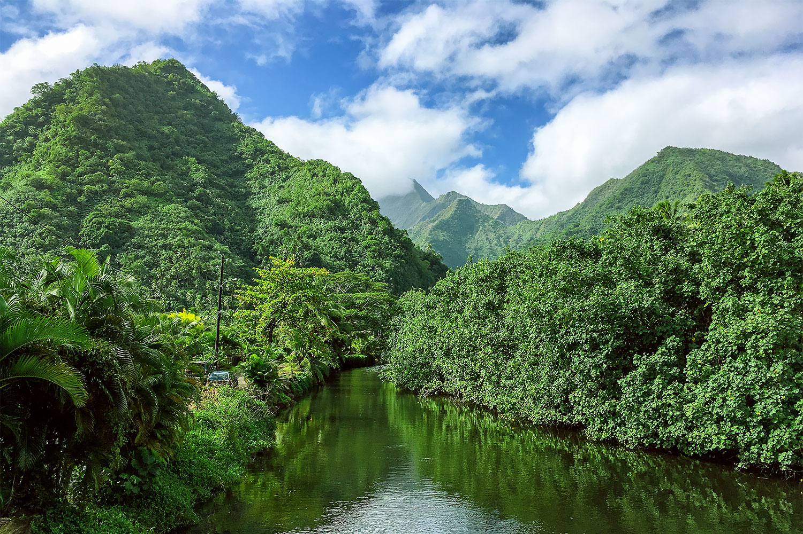
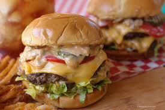
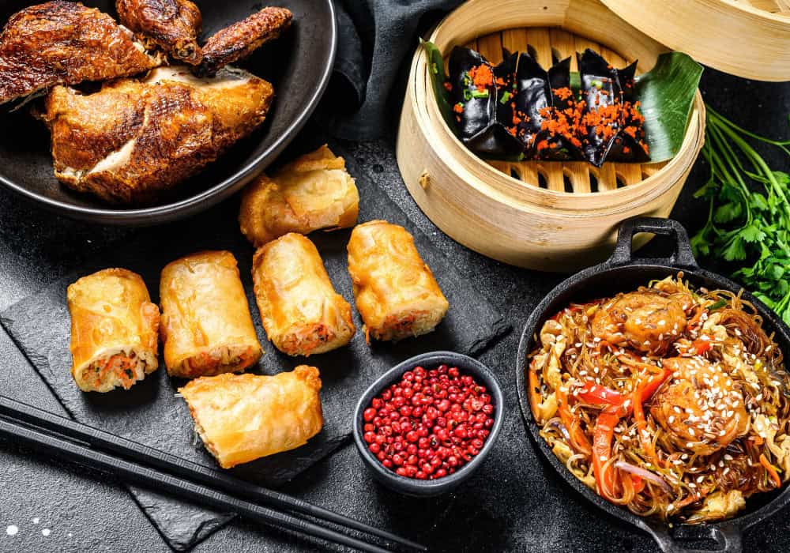
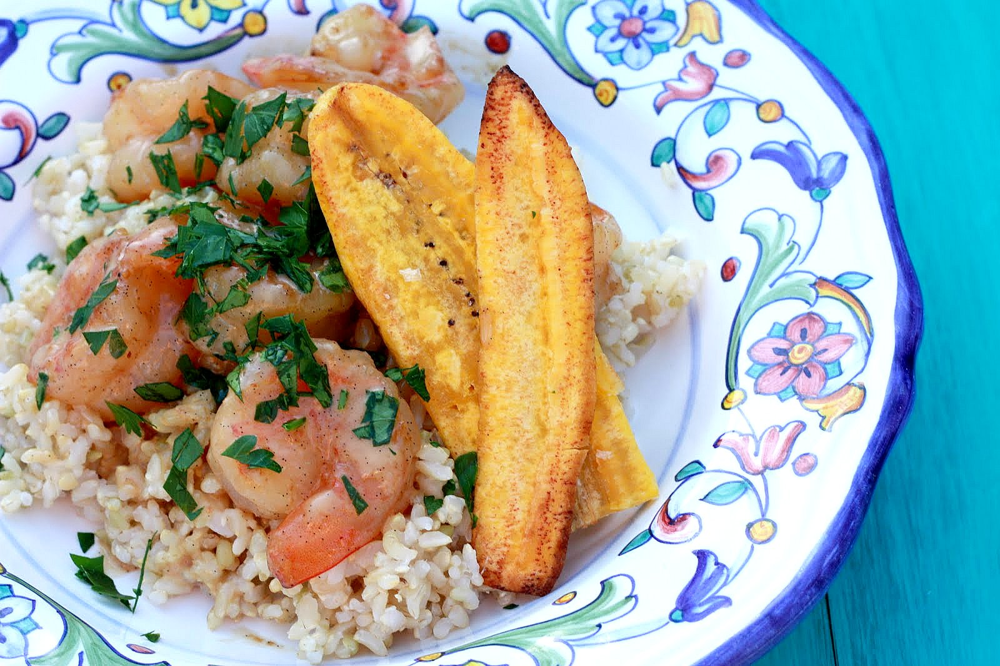
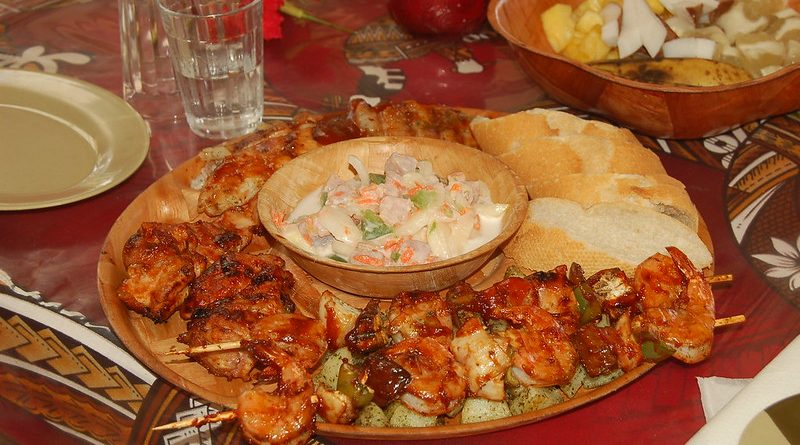

Dining & Groceries
Taniti has a small but varied food scene, plus supermarkets and convenience options so visitors can stock up easily.

Dine in Taniti
Amazing Food • Amazing Drinks • Amazing Volcano
Restaurants
Taniti currently has 10 restaurants:
- 5 primarily local fish and rice
- 3 American-style meals
- 2 Pan-Asian cuisine
Best local Fish & rice
Familiar American-style
Grocery Stores
For self-catering and snacks:
- 2 supermarkets
- 2 smaller grocery stores
- 1 24-hour convenience store
Convenience 24/7 store
Tip Great for late arrivals
Try some local favorites

The Red-Oak Barrel
Fresh seafood and outdoor seating right on the beach.

Doug's Diner
American style diner specialising in burgers and fries. Customer favorite is the Southwest Double Stack.

The Jade Dragon
Asian style food with a bit of polynesian flair using only locally sourced fresh ingredients.
Helpful Dining Notes
Alcohol service restriction
Alcohol is not allowed to be served or sold between midnight and 9:00 a.m.
Currency & payment
Taniti uses the U.S. dollar. Many businesses accept euros and yen, and many accept major credit cards.
Amazing food and a volcano



Sample “Day of Food” Plan
Breakfast
Bed & breakfast meal or grab fresh items from a supermarket.
Easy start
Lunch
Local fish and rice near the bay after beach time or sightseeing.
Local flavor
Dinner
Pan-Asian cuisine or American-style meals—then visit pubs/microbrewery in Merriton Landing.
Nightlife nearby
Travel tip
If you’re staying in a private home, condo, or beach house, the 24-hour convenience store is a great backup for late-night snacks (non-alcoholic during restricted hours).